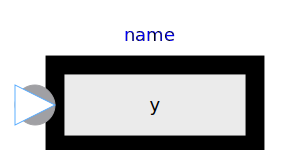
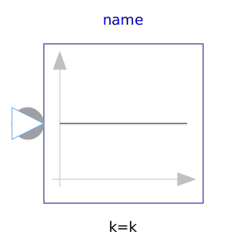
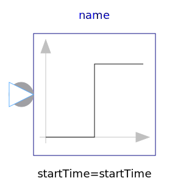
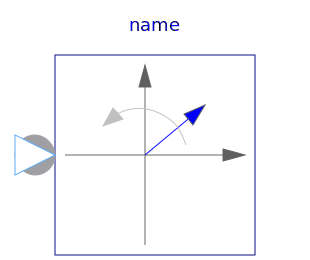
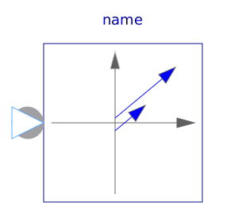
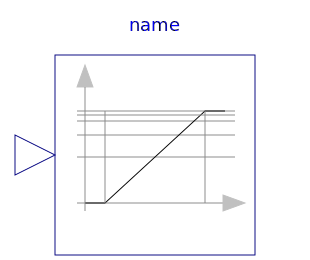

Library of signal source blocks generating Complex signals
| Name | Description |
|---|---|
|  ComplexExpression | Set output signal to a time varying Complex expression |
|  ComplexConstant | Generate constant signal of type Complex |
|  ComplexStep | Generate step signal of type Complex |
|  ComplexRotatingPhasor | Generate a phasor with constant magnitude and constant angular velocity of type Complex |
|  ComplexRampPhasor | Generate a phasor with ramped magnitude and constant angle |
|  LogFrequencySweep | Logarithmic frequency sweep |